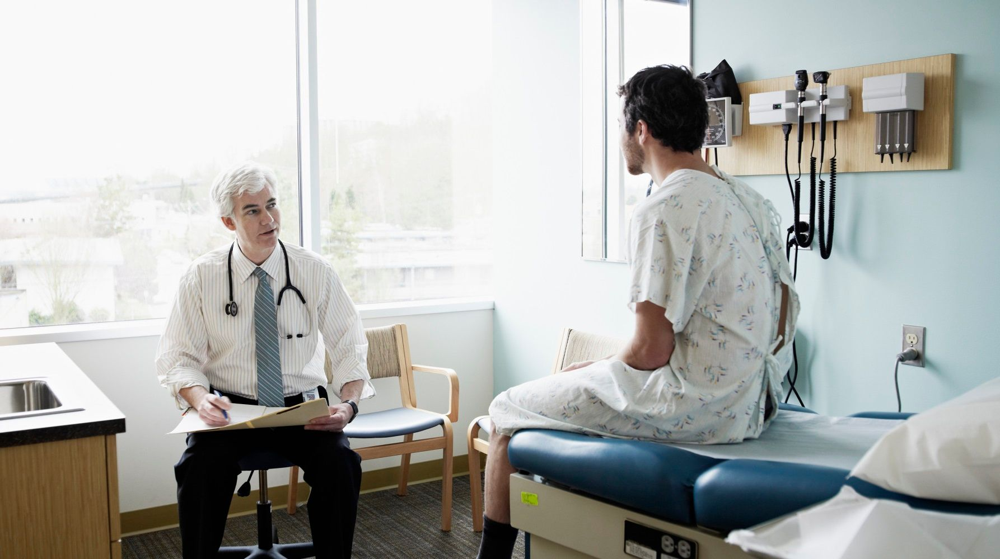
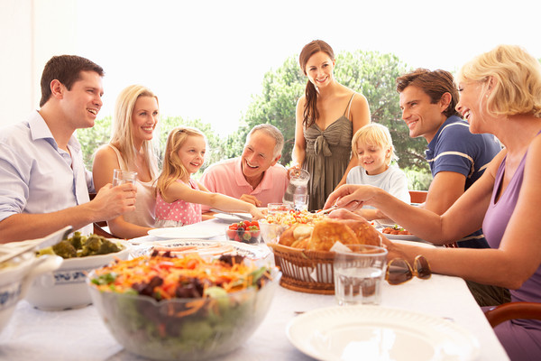

A year ago, when Husband and I were discussing opening our marriage, we agreed that it wasn't something we'd ever be able to take back. If we fell in love with other people, and those other people fell in love with us, it would be grueling to cut ties, end those relationships, and go back to monogamy. However, I did express the sentiment that I could see myself wanting to be monogamous again in one very specific circumstance: if Husband got cancer. I imagined myself wanting to be by his side constantly. How could I want to date at a time like that? I thought. So we agreed, if one of us gets cancer, we’ll consider going back to monogamy.
On June 13th, 2017, our eighth wedding anniversary, we got the call confirming that Husband has Hodgkins Lymphoma. Cancer. I have eaten my words. Getting cancer didn't make us want monogamy again. Rather the opposite. We are so grateful that we became polyamorous before we got this diagnosis. Rather than being isolated in our sorrow, we are surrounded by support. I was sobbing in my parked car one evening. I texted Husband. He said, “Stay and cry as long as you need to. The kids are taken care of.” Husband knew I was crying about him, about cancer, so he didn't try to talk to me about my feelings any further. I texted my boyfriend. He said, “Ok, I'll cry with you.” Do you know how comforting that is? I felt then that I wasn't completely alone in my agony. When I finally stopped crying and went home, Husband was waiting for me with a mug of tea, and we were able to talk about how I had been feeling. I was so grateful for both of them that day.
Husband's Girlfriend has been to every single appointment with us, and let me tell you, there have been numerous appointments. There's the you-probably-have-cancer appointment, then the meeting-the-biopsy-doctor appointment, then two actual biopsy appointments, then the confirming-the-diagnosis appointment, followed by some tests (read: two more appointments) to check Husband’s heart and lungs, the appointment with the PCP that Husband now needs, then the 3 hour (!!!) PET scan to help determine the stage of the cancer, and lastly the appointment where the oncologist tells you that Husband has stage 2 Hodgkins Lymphoma. All of this is before chemo. Husband's Girlfriend went to every single appointment with us. Do you know how comforting that is? We feel that we are not completely alone in our agony. Husband's Girlfriend thinks that the most helpful thing she does at these appointments is ask the right questions because she is a nurse. Husband and I appreciate that, of course, but even more so we appreciate her simple, physical presence. We appreciate having another hand to hold. My grandfather said to me, “Be brave. You can't get down when he's down. You have to be brave and strong.” I just thought, I can't! It's too much pressure. It's impossible. I wouldn't want to be Husband's sole source of support, and I'm so grateful that I don't have to be.
The entire Polyamorous community in Richmond, VA has been a source of support for us during this time. We have someone bringing us pizza every weekend from now to September. People have brought groceries, cared for our children, cleaned our house, and even done tasks that were previously on Husband's to-do list like mounting the microwave. Husband and I have the support of our biological families and our non-poly friends as well, but we need all this help. We need the help of our families, friends, and community, and we're so grateful for everything that is being done for us. Surely some of you are thinking, but how could you share your husband at a time like this? How could you ever be away from him? The truth is that I actually don't want to be around him constantly right now. Yes, every second that I spend with him is precious, and I savor my time with him. But right after the you-probably-have-cancer appointment, Husband and I had nothing but sorrow between us. We spent our alone time together just holding each other and weeping. That's no way to live. Our partners give us laughter. Our partners give us brightness. Before cancer, Husband expressed some wobbly feelings about my boyfriend. They're very similar. They both give me music. Husband thinks my boyfriend is more attractive than him. Husband said, “I feel a little worried that I am replaceable.” I thanked him for telling me his feelings. I reassured him that of course he isn't replaceable. He felt better. We went about our evening as usual. After cancer, I asked if Husband was having any wobbly feelings about my boyfriend, or about being replaceable. Husband said, “Now I want to be replaceable.” Do you know how comforting that is for him? To know that I will never be alone. It’s not all gratitude and compersion all the time in poly cancer land. There are moments of jealousy. I worried that maybe Husband would never laugh with me again, that it would only be sorrow between us, and he would want to spend less and less time with me and more and more time with his girlfriend because she could give him laughter. It passed. Husband and I have been able to laugh together again. Husband and I both worry that we are terrible partners. That we are just draining the people who love us, and they will burn out. Our partners reassure us that there's nothing to worry about. Husband's girlfriend says, “You didn't choose cancer.” My boyfriend says, “If this is you at a reduced level, my God, how much more will you give me later?” Being polyamorous doesn't solve all our problems. It doesn't make it easy to have cancer. But we certainly don't want to go back to monogamy, now or ever. We need our village.